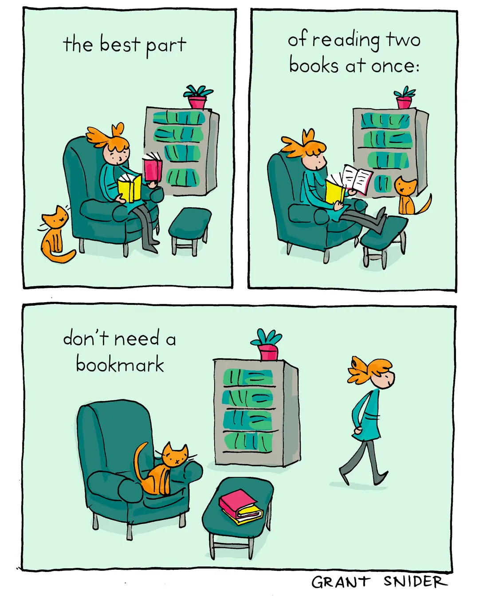

Happy Sunday! Thank you for supporting the Daily Bulletin project.
- Book a meeting with the WellCo chairs.
- Provide feedback to WellCo through the WellCo Line.
- Sign up to take over a WellCo session.
- Suggest improvements to the Daily Bulletin project.
- Unsubscribe if you no longer wish to receive emails from the Daily Bulletin project.
Wellbeing Inspirations
Want to contribute to a future Daily Bulletin? Share your inspirations to give everyone some morning wellbeing energy!
Cartoon of the Day

Created by Grant Snider.
Delicious Dinings
| Day | Meal | Options |
|---|---|---|
| Sun | Brunch | Hot Breakfast |
| Dinner | Classic Lasagne | |
| Green Lasagne 🌱 | ||
| Mon | Breakfast | Pancake / Waffle Bar 🌱 🌱 |
| Lunch | Moroccan Lamb Tangine | |
| Spinach & Potato Frittata 🌱 | ||
| Dinner | Vegetarian Bean Chili 🌱 |
The catering team would like to remind everyone to wash their hands before coming to the dining hall, and to refrain from eating in the servery area. Thank you!
Retrieved from Shared Weekly Menu. For reference only; accuracy not guaranteed.
Important Events
| Day | Time | Event | Location |
|---|---|---|---|
| Sun | 10:00–17:00 | Christmas Fayre | Castle, Art Centre |
Retrieved from What's On This Week.
Today in History
- 1972 – Construction workers found the remains of Martin Bormann near Lehrter Station in Berlin, ending a decades-long search after his conviction in absentia at the Nuremberg trials.
- 1995 – The Galileo spacecraft arrived at Jupiter, a little more than six years after it was launched by Space Shuttle Atlantis during Mission STS-34.
Retrieved from Wikipedia.